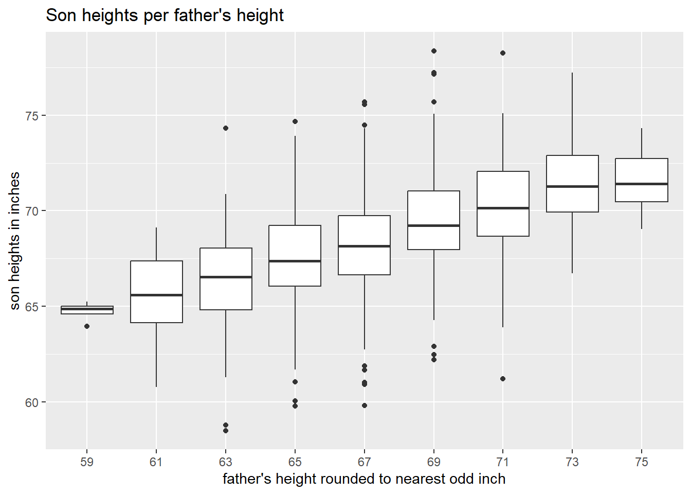
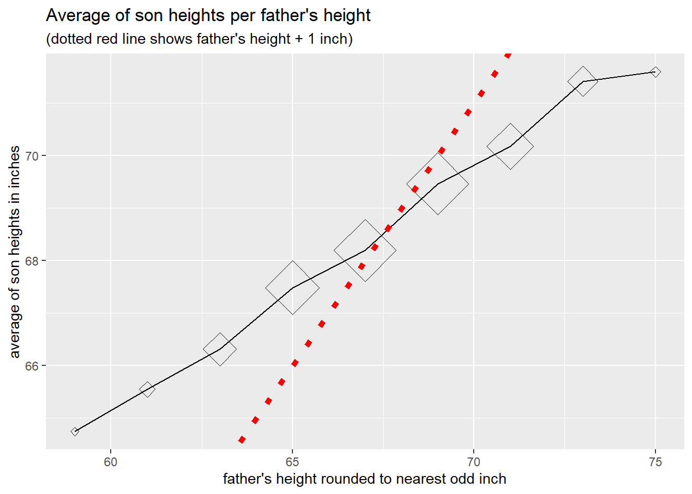
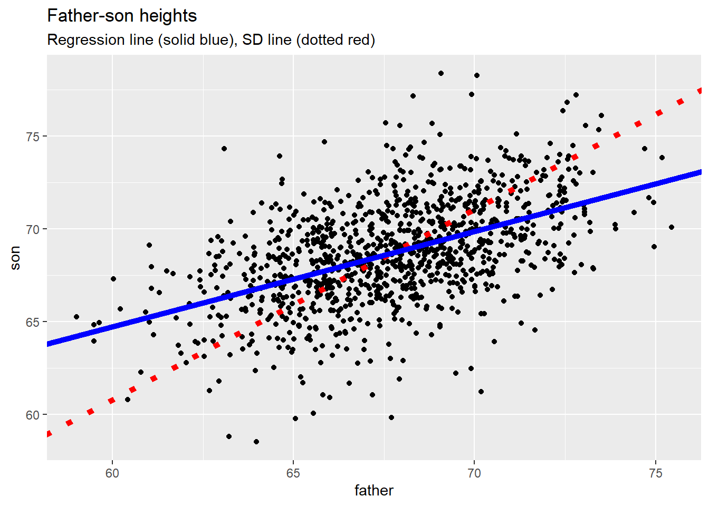
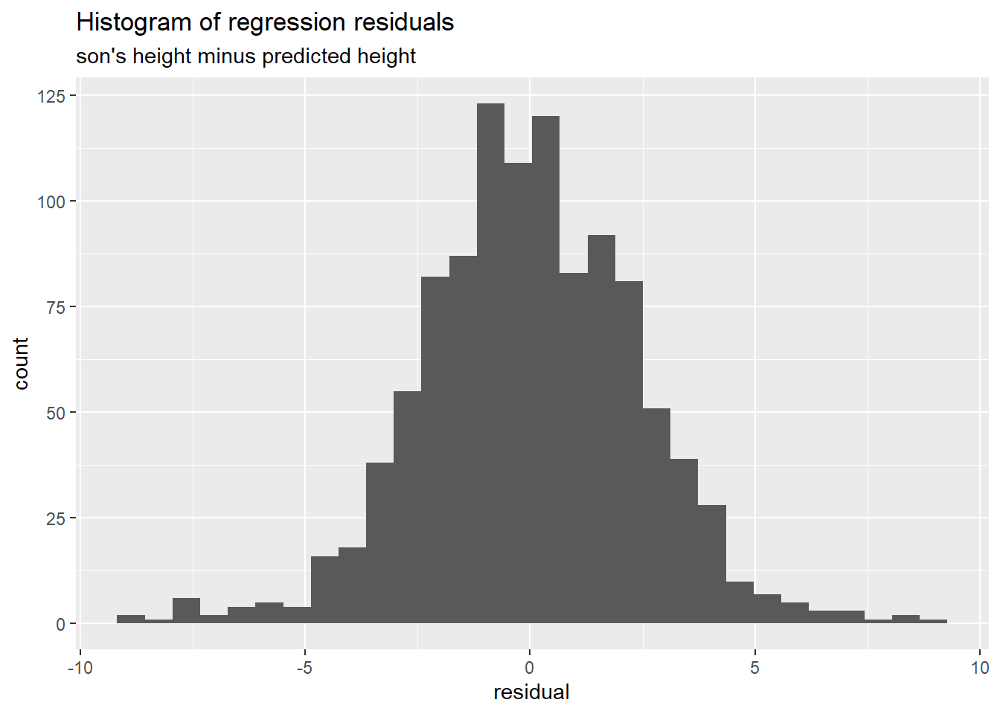
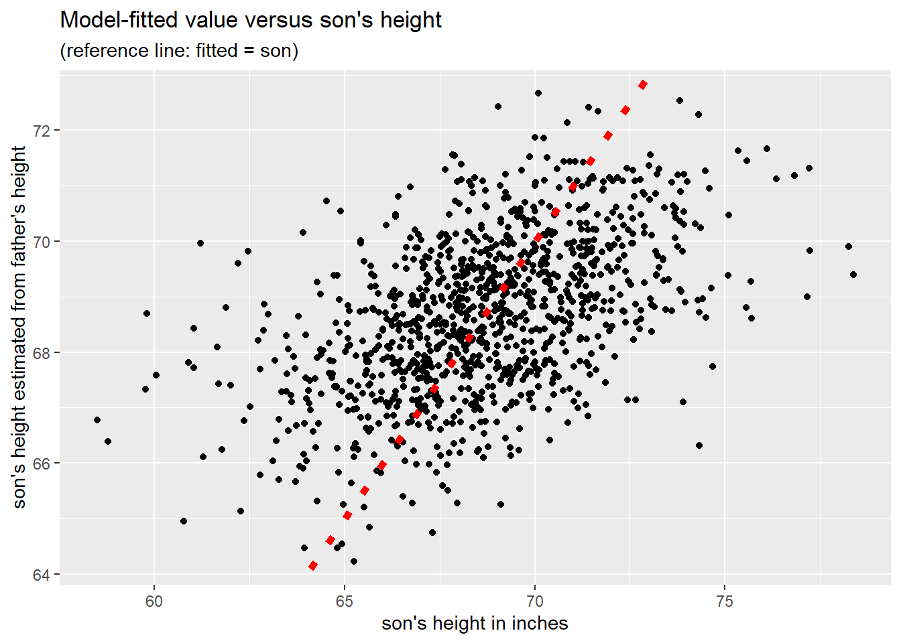

2 Conditional Distributions
Part 1, session 1b of Data Mining Intro
Abstract
Review the concepts of conditional distribution, conditional expectation, simple linear regression, statistical independence, entropy, and KL divergence.
2.1 Heights of Fathers and Sons
The box-plot below can be regarded as the (sample) conditional distribution of sons’ heights grouped by the height (rounded to the nearest odd inch) of each son’s father.
# A tibble: 9 × 7
f_ivl f_mpt s_count s_min s_mid s_max s_avg
<fct> <dbl> <int> <dbl> <dbl> <dbl> <dbl>
1 (58,60] 59 4 63.9 64.9 65.2 64.7
2 (60,62] 61 16 60.8 65.6 69.1 65.5
3 (62,64] 63 77 58.5 66.5 74.3 66.3
4 (64,66] 65 208 59.8 67.4 74.7 67.5
5 (66,68] 67 276 59.8 68.2 75.7 68.2
6 (68,70] 69 275 62.2 69.2 78.4 69.5
7 (70,72] 71 152 61.2 70.1 78.2 70.2
8 (72,74] 73 63 66.7 71.3 77.2 71.4
9 (74,76] 75 7 69.0 71.4 74.3 71.6The last column in the table above is the sample average of the son’s height given the father’s height, which we take as an estimate of the population average of the son’s height given the father’s height, that is, the conditional expectation of son’s height given father’s height.
The figure below represents these sample conditional averages per father’s height as diamonds, whose area is roughly proportional to the number of sons in each group. The figure includes a reference line showing the father’s (midpoint) height plus 1 inch, corresponding to our previous calculation of an average son-minus father difference.

The above graph of average son-height per father’s height forms an approximate straight line, although the slope of the line is less than 1 (which is the slope of the reference line).
2.2 Z-Scores: transforming data values to standard units
Imagine choosing a father-son pair at random from the entire population and measuring their respective heights. This would be an example of a pair of random variables \((X, Y)\). If we happened to know the average and standard deviation of (father, son) heights, respectively, from the entire population, we could convert the given heights to so-called standard units, or z-scores, as follows.
\[ \begin{align} Z_x(X) = \frac{X - \mu_x}{\sigma_x} \\ Z_y(Y) = \frac{Y - \mu_y}{\sigma_y} \\ \end{align} \qquad(2.1)\]
Here \(\mu\) signifies the average (arithmetic mean) height across the entire population, and \(\sigma\) denotes the population standard deviation. Thus \(Z_x(X)\) gives the number of standard deviations above or below the population average (expected value).
Of course we seldom have precise values for these population parameters. In practice we then use sample estimates of the parameters, say \(\hat{\mu}\) for the sample average and \(\hat{\sigma}\) for the sample standard deviation.
\[ \begin{align} \hat{\mu}_x &= \frac{1}{n} \sum_{k = 1}^{n} x_k \\ \hat{\sigma}_{x}^2 &= \frac{1}{n-1} \sum_{k = 1}^{n} (x_k - \hat{\mu}_x)^2 \\ \end{align} \qquad(2.2)\]
So the term “z-score” or “standard unit” is usually understood with respect to the sample distribution.
\[ \begin{align} \hat{Z}_x(x_k) = \frac{x_k - \hat{\mu}_x}{\hat{\sigma}_x} \\ \hat{Z}_y(y_k) = \frac{y_k - \hat{\mu}_y}{\hat{\sigma}_y} \\ \end{align} \qquad(2.3)\]
2.2.1 SD line
The line given by the equation \(\hat{Z}_y(y) = \hat{Z}_x(x)\) is called the “SD line”. Here’s an equivalent equation of this line.
\[ \begin{align} \text{SD line: } \\ y & = \mathcal{l}_{SD}(x) \\ &= \hat{\mu}_y + \frac{\hat{\sigma}_y}{\hat{\sigma}_x} (x - \hat{\mu}_x) \\ \end{align} \qquad(2.4)\]
Of all lines \(y = \mathcal{l}(x)\) we might draw through the \((x_k,y_k)\) data points, the SD line \(y = \mathcal{l}_{SD}(x)\) minimizes the sum of squared distances from each \((x_k,y_k)\) data point to its orthogonal projection to the line.
2.2.2 Regression line
Consider the father’s height as the predictor variable \((x)\) and the son’s height as the response variable \((y)\). We now seek a line that minimizes a different metric, namely the distance between the son’s height and its linear prediction based on the father’s height. In statistical parlance we are regressing the son’s height on the father’s height. (Because we have just one predictor variable this is called simple linear regression.) The minimizing line is called the regression line, and has the following equation.
\[ \begin{align} \text{Regression line: } \\ y & = \mathcal{l}_{R}(x) \\ &= \hat{\mu}_y + \hat{r} \frac{\hat{\sigma}_y}{\hat{\sigma}_x} (x - \hat{\mu}_x) \\ \end{align} \qquad(2.5)\]
An equivalent equation is \(\hat{Z}_y(y) = \hat{r} \hat{Z}_x(x)\), where \(\hat{r}\) denotes the sample correlation coefficient.
\[ \hat{r} = \frac{1}{n-1} \sum_{k = 1}^{n} \hat{Z}_x(x_k) \hat{Z}_y(y_k) \qquad(2.6)\]
Note that \(\hat{r}\) is restricted to the closed interval \([-1, 1]\).
The figure below shows the SD line and the Regression line for the father-son data.

The two lines intersect at the “point of averages”, that is, at \((\hat{\mu}_x, \hat{\mu}_y)\), which need not coincide with any data point.
The following figure and table summarize the regression “residuals”, that is the son’s height \((y)\) minus the height \((\hat{y})\) predicted by the linear model.
Call:
lm(formula = son ~ father, data = father_son_ht)
Coefficients:
(Intercept) father
33.8866 0.5141

Min. 1st Qu. Median Mean 3rd Qu. Max.
-8.877 -1.514 -0.008 0.000 1.629 8.969 There are many ways to examine how well a model represents the data. Here’s a scatter diagram of the value predicted (fitted) by the model versus the son’s actual height.

We see that the sons who are extremely short or extremely tall are not represented well by the model, which is heavily influenced by mid-range father-son heights containing most of the data. The father’s height alone is a helpful but imperfect predictor of the son’s height.
2.2.3 The Normal distribution
The father-son data set is well approximated by a bivariate normal distribution. The parameter estimates are as follows.
f_avg s_avg f_sd s_sd r
67.7 68.7 2.7 2.8 0.5 Sons are on average about an inch taller than fathers. Fathers and sons share similar standard deviations (2.7 versus 2.8). The sample correlation coefficient is about 0.5.
Among the mathematical properties of normal distributions is the fact that if the pair of random variables \((X, Y)\) has a bivariate normal distribution, then the conditional expectation \(E(Y | X)\) is indeed the linear regression function \(\mathcal{l}_R(X)\) whose equation is that of the population regression line, \(Z_y(Y) = r \; Z_x(X)\). The conditional distribution \(\mathcal{D}(Y | X)\) of \(Y\) given \(X\) is normal with a mean of \(\mathcal{l}_R(X)\) and a standard deviation of \(\sqrt{1 - r^2} \; \sigma_y\). Conditioning on \(X\) thus shrinks the standard deviation of \(Y\) by a factor of \(\sqrt{1 - r^2}\). For the father-son data, with \(r\) approximately equal to 0.5, this shrinkage factor is approximately 0.87, amounting to a 13% reduction in the standard deviation of \(Y\).
2.3 Class Exercise: Diamond Data
Team up with a classmate and load the diamond data provided by R package ggplot2. Of the 10 variables (data columns) choose one of them as the response variable \((y)\), and another as a predictor variable \((x)\). Construct a scatter diagram of \((x, y)\) data points. Calculate the equation of the regression line. Is the predictor variable useful, or irrelevant? The R package stats includes potentially helpful functions including a linear regression function, stats::lm(), and a local polynomial regression function stats::loess(). Take 20 minutes to prepare to report out to the class.
2.4 Simulating Random Variables
The R package stats contains functions that generate pseudo-random numbers following normal and other well-known statistical distributions. Here are some functions for simulating independent instances of a continuous or discrete random variable. In the table below, the “value” column distinguishes the function output as either continuous (dbl) or discrete (int).
| fn | value | distribution |
|---|---|---|
| rbeta | dbl | Beta |
| rcauchy | dbl | Cauchy |
| rchisq | dbl | (non-central) Chi-Squared |
| rexp | dbl | Exponential |
| rf | dbl | F |
| rgamma | dbl | Gamma |
| rlnorm | dbl | Log Normal |
| rlogis | dbl | Logistic |
| rnorm | dbl | Normal |
| rt | dbl | Student t |
| runif | dbl | Uniform |
| rweibull | dbl | Weibull |
| rbinom | int | Binomial |
| rgeom | int | Geometric |
| rhyper | int | Hypergeometric |
| rnbinom | int | Negative Binomial |
| rpois | int | Poisson |
The functions listed above are designed to generate a user-prescribed number \(n\) of independent instances of a single random variable \(X\). For some purposes we may want to simulate a pair of random variables \((X, Y)\) or more generally a vector of random variables \(X_{\bullet} = (X_1, X_2, \ldots, X_K)\) such that the components of the vector are statistically dependent. Such vectors are said to follow a multivariate distribution. For example the stats package contains function rmultinom, a multivariate extension of rbinom. In general multivariate distributions are addressed by special-purpose R packages created by members of the R community.
2.5 Cautionary Remarks
2.5.1 Robust statistics
The sample average (arithmetic mean) is notoriously sensitive to outliers (data points far removed from most of the other data points). For this reason, the median is often used in place of the mean to describe central or typical values. For example, medians are commonly used to typify home prices in a neighborhood, and for other financial data.
Similarly, the interquartile range (IQR, the third minus the first quartile of the data) may be preferred to the standard deviation to measure how widely data points are spread around a central value (e.g., median).
In the present context this means that both the SD line and the Regression line are highly sensitive to outlying data points.
2.5.2 Anscombe Quartet
Professor Frank Anscombe constructed the “Anscombe Quartet”: 4 data sets, each consisting of 11 observations of \((x, y)\) pairs of numeric values. Here are the statistics per group.
# A tibble: 4 × 6
grp x_avg y_avg x_sd y_sd r
<int> <dbl> <dbl> <dbl> <dbl> <dbl>
1 1 9 7.50 3.32 2.03 0.816
2 2 9 7.50 3.32 2.03 0.816
3 3 9 7.5 3.32 2.03 0.816
4 4 9 7.50 3.32 2.03 0.817The four groups share virtually identical averages, standard deviations, and \((x, y)\) correlation coefficients. Consequently the four data sets generate identical regression lines. Yet, as shown below, the pattern of \((x, y)\) values differs markedly among these data sets.

Moral: pay attention to the data! The graphical and tabular summaries we choose to present should be useful and informative. For example, it might be helpful to note that group 2 looks like the partial outline of a parabola. We should note that group 3 consists of 10 points falling on a line, with one outlier. In group 4 we should note that of the 11 data points, 10 have identical \(x\)-values. We want to minimize the chance of inadvertently conveying false impressions by merely reporting standard summary statistics.
2.6 Statistical Independence
The father-son data is an example of a pair of statistically dependent variables, since the distribution of sons’ heights changes when conditioned on the father’s height. (The same can be said for fathers’ heights conditioned on the height of the son.) Short fathers tend to have short sons; tall fathers tend to have tall sons.
Practical examples of statistically independent (unrelated) variables exist but are rare, since studies typically collect data on variables believed to be related. Nevertheless, the concept of statistical independence is very useful, as it gives rise to measures of departure from statistical independence (and thus measures of statistical association).
The correlation coefficient \(r\) is an example of such a measure for two continuous variables. If \((X, Y)\) is a pair of statistically independent variables, then \(r = 0\). Note, however, that \((X, Y)\) may be statistically dependent even if uncorrelated, that is, even if \(r = 0\).
2.6.1 Definition
The pair of random variables \((X, Y)\) is defined to be statistically independent if
\[ \begin{align} P(X \in A, \; Y \in B) &= P(X \in A) \times P(Y \in B) \\ \\ & \text{for all possible sets } A, B \\ \end{align} \qquad(2.7)\]
If \(P(X \in A) > 0\) then statistical independence implies:
\[ \begin{align} P(Y \in B \; | \; X \in A) &= \frac{P(X \in A, \; Y \in B)}{P(X \in A)} \\ &= P(Y \in B) \\ \\ & \text{whenever } P(X \in A) > 0 \end{align} \qquad(2.8)\]
That is, the conditional probability of random variable \(Y\) belonging to set \(B\) given that \(X\) belongs to set \(A\) is equal to the unconditional probability that \(Y\) belongs to set \(B\). It follows that the conditional expectation \(E(Y | X)\) does not depend on \(X\), and thus equals the constant \(E(Y)\), the unconditional expected value of \(Y\).
2.6.2 The case when X and Y are categorical variables
As previously noted, for a pair \((X,Y)\) of continuous variables, the correlation coefficient is a measure (though not a definitive measure) of statistical association or dependence. In the case when \(X\) and \(Y\) are each restricted to a finite set of values, the chi-square statistic is often a useful measure of statistical association.
To illustrate, we use data on handedness (right, left, or ambidextrous) of US adults aged 25-34. The data were collected by the US Health and Nutrition Examination Survey (HANES), as cited in FPP. The question we investigate is whether handedness is independent of sex (male, female). For each of the six possible combinations of handedness and sex, the table below counts the number of people in the sample having that combination.
| handedness | male | female |
|---|---|---|
| right | 934 | 1070 |
| left | 113 | 92 |
| ambi | 20 | 8 |
The percentages of handedness among males and among females are as follows.
| handedness | male | female |
|---|---|---|
| right | 87.5 | 91.5 |
| left | 10.6 | 7.9 |
| ambi | 1.9 | 0.7 |
If handedness and sex were independent, we should see similar percentages of males and females for each type of handedness. The above table indeed shows similar percentages, but are they close enough to conclude independence?
In the early 1900’s Karl Pearson developed the chi-squared test of independence of categorical variables. The reasoning is as follows. Suppose we accept as population estimates the data percentages of handedness (across males and females), and we also accept the somewhat different percentages of males and females in the sample. These so-called marginal distributions are not in dispute. What we’re investigating concerns the cell percentages, combinations of handedness and sex. Under the assumption of independence we would expect each cell percentage in the data to be close to the product of the handedness percentage and the male or female percentage. That product is an expected cell percentage (assuming independence). Multiplying the expected cell percentage by the by the sample size \(n\) (number of people in the sample) gives an expected cell count. Pearson’s test of independence is based on the following chi-squared statistic.
\[ \begin{align} \chi^2 &= \sum_{j = 1}^J {\sum_{k = 1}^K {\frac{(O_{j,k} - E_{j,k})^2}{E_{j,k}}}} \\ \\ O_{j,k} &= \text{observed count for cell } \{j, k\} \\ E_{j,k} &= \text{expected count for cell } \{j, k\} \\ \end{align} \qquad(2.9)\]
Under the assumption of independence Pearson determined the probability distribution of the \(\chi^2\) statistic mathematically based on the notion of “degrees of freedom”.
That is, for each row-index \(j\) the expected counts summed across \(k\) are constrained to match the corresponding sum of the observed values (the sum for row \(j\)). Similarly, for each column-index \(k\) the expected counts summed across \(j\) are constrained to match the corresponding sum of the observed values (the sum for column \(k\)). Given these fixed marginal sums, cell values can vary with \((J-1) \times (K-1)\) degrees of freedom.
Under the assumption of independence and for a large sample size \(n\), the chi-squared statistic approximately follows the distribution of the sum of squared independent standard normal variables, the number of independent normal variables matching the degrees of freedom.
For the handedness data the degrees of freedom equals 2, and the value of the statistic is 11.8, which is beyond the 99% quantile of the corresponding chi-squared distribution (and thus yields a “p-value” of less than 1%). This would be regarded as strong evidence against the assumption of independence.
The chi-squared statistic is the sum of squared terms of the following form.
\[ \begin{align} \frac{O_{j,k} - E_{j,k}}{\sqrt{E_{j,k}}} \\ \end{align} \qquad(2.10)\]
These terms are called “Pearson residuals”. For the handedness data, the Pearson residuals are as follows.
| handedness | male | female |
|---|---|---|
| right | -0.7 | 0.7 |
| left | 1.5 | -1.5 |
| ambi | 1.8 | -1.7 |
Roughly speaking, under independence the magnitude of cell values should align with the scale of standard normal variables. For the handedness data, the large value of the chi-square statistic cannot be attributed to a single cell of the table, but rather to the left-handed and ambidextrous cells (handedness to which males are more prone than females).
2.6.3 Simpson’s Paradox
We now turn to a different set of categorical data from a study of graduate admissions at UC Berkeley in 1973 available in R as datasets::UCBAdmissions. The study was prompted by a concern of bias against females. The table below summarizes admission percentages for males and for females across the six largest departments.
| decision | Male | Female |
|---|---|---|
| Admitted | 44.5 | 30.4 |
| Rejected | 55.5 | 69.6 |
These percentages look damning, but the table below, showing admission rates per department, tells a different story.
| dept | among_males | among_females | overall |
|---|---|---|---|
| A | 62.1 | 82.4 | 64.4 |
| B | 63.0 | 68.0 | 63.2 |
| C | 36.9 | 34.1 | 35.1 |
| D | 33.1 | 34.9 | 34.0 |
| E | 27.7 | 23.9 | 25.2 |
| F | 5.9 | 7.0 | 6.4 |
The table shows that four of the six departments admitted a greater percentage of female applicants than male applicants. In the remaining two departments females did somewhat worse than males. Yet, summing over all six departments, women applicants fared decidedly worse than male applicants. How can this be?
The answer can be found by: (1) noting that the table above lists departments, labeled A through F, in descending order of overall admission rates; and (2) examining the following table that shows each department’s share of applicants: male, female, and overall.
| dept | from_males | from_females | overall |
|---|---|---|---|
| A | 825 | 108 | 933 |
| B | 560 | 25 | 585 |
| C | 325 | 593 | 918 |
| D | 417 | 375 | 792 |
| E | 191 | 393 | 584 |
| F | 373 | 341 | 714 |
Here are the same counts but now converted into per-department percentage of applications from males, females, and overall, respectively.
| dept | from_males | from_females | overall |
|---|---|---|---|
| A | 30.7 | 5.9 | 20.6 |
| B | 20.8 | 1.4 | 12.9 |
| C | 12.1 | 32.3 | 20.3 |
| D | 15.5 | 20.4 | 17.5 |
| E | 7.1 | 21.4 | 12.9 |
| F | 13.9 | 18.6 | 15.8 |
We see that relatively few females applied to departments A and B, which had the highest overall admission rates. Females tended more than males to apply to departments having overall low rates of admission. That is, departmental admission rate is an explanatory variable missing from the initial summary of male and female admission rates across all six departments.
This phenomenon, a pattern per group that is masked when summarized across groups, is known as Simpson’s paradox. More generally, we must be alelrt to the possibility that we have overlooked some variable (sometimes called a “confounding” variable) that could alter our conclusions.
2.7 Entropy
2.7.1 Background
The term “entropy” was defined in the mid-19th century (with the emergence of Statistical Mechanics) as a measure of the disorder of a physical system. In 1948 (with the emergence of Information Theory) Claude Shannon introduced the same term and equivalent mathematical definition as a measure of uncertainty.
2.7.2 Yes-No Questions
Let’s illustrate the concept of entropy with a variant of the game “Twenty Questions”. The contestant is presented with a box of tickets, each ticket bearing a single capital letter of the English alphabet. The contestant is shown the box, and thus knows the number of tickets bearing each letter. (It may happen that only a few of the possible 26 letters actually appear in the box.) The game begins with the random drawing of a ticket not visible to the contestant. The contestant may ask yes-no questions about the ticket until the contestant determines with certainty the letter written on the ticket. (The contestant does not guess but rather comes to a firm conclusion.) The ticket is put back in the box, ending the first round of the game. Subsequent rounds of the game are exactly like the first, a new ticket is drawn at random; it’s letter must be deduced by the contestant through a sequence of yes-no questions. The contestant is evaluated on the average number of questions required to determine the letter on a randomly drawn ticket.
We suppose that contestant devises the most informative sequence of questions possible. Consequently, the average number of required questions is a measure of the difficulty presented by the set of tickets in the box, that is, of the uncertainty of the value of a randomly drawn ticket.
Here are some different scenarios.
Box 1: If the contents of the box were \(\{A, A , A, A \}\) then the contestant needn’t spend any questions to determine with certainty the value of a randomly drawn ticket. The average number of required questions would be zero.
Box 2: If the contents of the box were \(\{A, A , B, B \}\) then the contestant would require one question to determine with certainty the value of a randomly drawn ticket. The average number of required questions would be one.
Box 3: If the contents of the box were \(\{A, B , C, D \}\) then the contestant would require two questions to determine with certainty the value of a randomly drawn ticket. The average number of required questions would be two.
Box 4: Now consider the box \(\{ A, A, B, C \}\). The contestant’s first question might be whether the ticket-value is \(A\), the most probable value. In half the rounds the answer would be a definitive yes, limiting the number of questions to 1. In the other half of the rounds, a single follow-up question would be required to identify the ticket-value with certainty. Averaged across rounds the required number of questions would be \((\frac{1}{2} \times 1) + (\frac{1}{2} \times 2) = \frac{3}{2}\).
In general, consider a binary search strategy. Partition the set of all tickets into two subsets of distinct ticket-values, so that the two subsets contain a nearly equal number of tickets (to the extent possible). Devise the first question to determine to which of the two subsets the randomly drawn ticket belongs. Now partition the identified subset into two further subsets distinguished by ticket-values, again of equal or nearly equal size. Devise the second question to determine which of these two subsets is the origin of the randomly drawn ticket. Continue in this way until the randomly drawn ticket is identified.
Under the binary search strategy the maximum number, say \(\mu\), of required questions is a function of the number, say \(K\), of distinct ticket-values, namely, \(\mu\) is the smallest integer such that \(\mu \ge \log_2(K)\). But that is a worst-case scenario: \(\mu\) is generally greater than the average number of required questions, as illustrated by Box 4.
2.7.3 Definition
The mathematical definition of entropy (usually denoted \(H\)) gives a lower bound on the average number of required questions that follow an optimal strategy. For a finite probability distribution \(p_{\bullet} = (p_1, p_2, \ldots, p_K)\) the mathematical definition is as follows.
\[ \begin{align} H(p_1, p_2, \ldots, p_K) \\ &= \sum_{k = 1}^K { p_k \times \log_2(\frac{1}{p_k}) } \\ &= - \sum_{k = 1}^K { p_k \times \log_2(p_k) } \\ \\ & \text{with } p_k = \text{probability of drawing value } k \\ & \text{and } K = \text{number of distinct values} \end{align} \qquad(2.11)\]
(This definition of \(H\) uses a base-2 logarithm \(\log_2()\) to match our yes-no question game. The units of this \(H\) are the required number of yes-no questions, that is, binary digits, or “bits”. \(H\) is sometimes defined using the natural logarithm \(\log_e()\) yielding a unit called “nats”. Changing the base of the logarithm changes \(H\) by a multiplicative constant.)
For the first box in the game above, we have a single value \(A\), which is thus drawn with probability one, which yields \(H = 0\).
For the second box we have two values, each drawn with probability \(\frac{1}{2}\), so \(H = 1\).
For the third box we have four values, each drawn with probability \(\frac{1}{4}\), so \(H = 2\).
For the fourth box, we calculated that the average number of required questions is \(\frac{3}{2}\), which is the value of \(H\).
2.7.4 \(H_{X, Y}\) for independent \((X, Y)\)
So far we’ve discussed entropy with respect to a single random variable. We now extend the discussion to a pair of random variables. Let’s change the game so that each ticket now bears both a letter and a positive integer.
Let our first example be \(\{ A_1, A_1, B_1, C_1, A_2, A_2, B_2, C_2 \}\), in which the set of letter-tickets \(\{ A, A, B, C \}\) is duplicated, initially with the subscript 1, and then with the subscript 2. Drawing a ticket at random from this box is equivalent to drawing a letter at random from \(\{ A, A, B, C \}\) and then independently drawing a number from \(\{ 1, 2 \}\). The contestant may as well first ascertain the letter and then ascertain the number, requiring on average \(\frac{3}{2} + 1\) questions.
More generally, suppose we have a pair \((X, Y)\) of independent random variables that take on a finite set of values. Then
\[ \begin{align} P(X = x_j, \; Y = y_k) \\ &= P(X = x_j) \times P(Y = y_k) \\ \end{align} \]
or more succinctly
\[ \begin{align} p_{X, Y}(j, k) &= p_X(j) \times p_Y(k) \end{align} \]
The entropy of the distribution of \((X, Y)\) is:
\[ \begin{align} H_{X, Y} &= H(\; \{ p_{X, Y}(j, k) \} \;) \\ &= - \sum_{j = 1}^J{\sum_{k = 1}^K {p_{X, Y}(j,k) \times log_2(\; p_{X, Y} (j,k) \;)}} \\ &= - \sum_{j = 1}^J{\sum_{k = 1}^K {p_X(j) \times p_Y(k) \times log_2(\; p_X(j) \times p_Y(k) \;)}} \\ &= - \sum_{j = 1}^J \sum_{k = 1}^K p_X(j) \times p_Y(k) \times \{ \; log_2(p_X(j) + log_2(p_Y(k) \; \} \\ &= H_X \times \sum_{k = 1}^K p_Y(k) \; + \; \sum_{j = 1}^J p_X(j) \times H_Y \\ &= H_X + H_Y \end{align} \qquad(2.12)\]
In words, when \((X, Y)\) are independent, their joint entropy equals the sum of their respective entropies.
2.7.5 Mutual Information
Now consider the case where \((X, Y)\) are dependent. Suppose, for example, that our box of tickets is \(\{ A_1, A_2, B_1, C_2 \}\). The marginal distribution of letters remains \(\{A, A, B, C \}\) and the marginal distribution of numbers is \(\{1, 2, 1, 2\}\) which is equivalent to the box \(\{1, 2\}\) of the previous example.
In the previous example, had the contestant first determined the subscript on the randomly drawn ticket, that information would not have affected the subsequent process of determining the letter. The average number of required questions would remain \(1 + \frac{3}{2}\).
Now, however, using the first question to determine the subscript reduces the letter possibilities to either \(\{A, B\}\) or else \(\{A, C\}\). A single additional question is required to determine the letter. Thus the total number of required questions is 2, which equals the entropy value \(H\).
Let’s continue to suppose that \((X, Y)\) are dependent. An ill-informed contestant might adopt the strategy optimal for the independent case, attacking one variable at a time. But this strategy would no longer be optimal. There would now be instances in which knowledge of one variable would reduce the average number of additional questions required to determine the value of the other variable. Thus the joint entropy \(H_{X, Y}\) never exceeds the entropy \(H_X + H_Y\) of the independent case.
The reduction in entropy when the distribution of \((X, Y)\) is changed from independent to dependent (while retaining the original marginal distributions) goes by different names, including “information gain” and (less ambiguously) “mutual information”.
We define mutual information \((MI)\) as this reduction.
\[ \begin{align} MI_{X, Y} &= H_X + H_Y - H_{X, Y} \\ \end{align} \qquad(2.13)\]
\(MI\) is non-negative, and is zero when \((X, Y)\) are independent.
2.7.6 KL Divergence
Continuing from the discussion of mutual information, suppose that an ill-informed contestant has optimized their questioning strategy for the box \(\{ A_1, A_1, B_1, C_1, A_2, A_2, B_2, C_2 \}\), in which letters and numbers occur independently, when in fact the box is \(\{ A_1, A_2, B_1, C_2 \}\). The contestant’s strategy requires an average of \(\frac{5}{2}\) questions to determine the randomly drawn letter-number combination with certainty, but for the actual box one requires just 2 questions. The misinformation about the box from which tickets are randomly drawn costs the contestant, on average, \(\frac{1}{2}\) per question more than necessary.
Kullback-Liebler divergence is a mathematical representation of this phenomenon. It is defined as follows.
\[ \begin{align} KL(P \; || \; Q) \\ &= E_P \left( \log_2 \left( \frac{ 1 }{ Q(X) } \right) \right) - E_P \left( \log_2 \left( \frac{ 1 }{ P(X) } \right) \right) \\ &= E_P \left( \log_2 \left( \frac{ P(X) }{ Q(X) } \right) \right) \\ &= \sum_{ \{x : P(x) > 0 \}} P(x) \times \log_2 \left( \frac{P(x)}{Q(x)} \right) \\ \\ & \text{with } P(x) = \text{reference probability mass function} \\ & \text{and } Q(x) = \text{alternative probability mass function} \\ \end{align} \qquad(2.14)\]
In the example above, \(P(\cdot)\) is the probability of drawing any given letter-number combination from \(\{ A_1, A_2, B_1, C_2 \}\), and \(Q(\cdot)\) is the corresponding probability for \(\{ A_1, A_1, B_1, C_1, A_2, A_2, B_2, C_2 \}\). Here is the tally of the sum defining \(KL(P \; || \; Q)\).
| x | P(x) | Q(x) | log2_ratio | term |
|---|---|---|---|---|
| A_1 | 0.25 | 0.250 | 0 | 0.00 |
| B_1 | 0.25 | 0.125 | 1 | 0.25 |
| C_1 | 0.00 | 0.125 | -Inf | 0.00 |
| A_2 | 0.25 | 0.250 | 0 | 0.00 |
| B_2 | 0.00 | 0.125 | -Inf | 0.00 |
| C_2 | 0.25 | 0.125 | 1 | 0.25 |
For purposes of illustration the table above includes any value \(x\) assigned positive probability by either \(P(\cdot)\) or \(Q(\cdot)\), even those for which \(P(x) = 0\) and therefore do not contribute to the KL divergence, \(KL(P \; || \; Q)\). Also note that the sum of the terms, that is the KL divergence, is indeed \(\frac{1}{2}\). We will return to KL divergence in subsequent discussions.
2.8 Team Exercises
Simulate bivariate normal variables: Using
stats::rnorm()or otherwise, generate independent instances of a standard normal variable \(X\) (that is, having mean zero and standard deviation 1). Next choose a value of \(r\) such that \(-1 < r < 1\). Now for each instance of \(X\) construct an instance of random variable \(Y\) so that the distribution \(\mathcal{D}(Y \; | \; X)\) of \(Y\) given \(X\) is normal with expected value \(r \times X\) and standard deviation \(\sqrt{1 - r^2}\). (Hint: consider constructing \(Y\) by using \(X\) along with a new, independent standard normal variable \(Z\).) What are the unconditional mean and standard deviation of \(Y\)? What is the correlation coefficient of the pair \((X, Y)\)? How might you generalize your construction to accommodate other prescribed means \((\mu_x, \mu_y)\) and standard deviations \((\sigma_x, \sigma_y)\) of \((X, Y)\)?Simpson’s paradox: In the discussion above we illustrated Simpson’s paradox using the UCB Admissions data. Find or construct a different example.
Entropy, Discrete Uniform: If Box 5 is \(\{ A, B, C, D, E \}\), how many questions are required, on average, to determine with certainty the ticket that has been randomly drawn? What is the entropy \(H\) of this box? More generally, calculate \(H\) for a box \(\{ x_1, x_2, \ldots, x_K \}\) that contains \(K\) tickets, each having a unique value.
Entropy, UCB Admissions: Consider a box of tickets that matches the UC Berkeley admissions data. The number of tickets in the box is the number of applications in the data. Each ticket has three markings: either “Male” or “Female” to denote the sex of the applicant; either “Admitted” or “Rejected” to denote the decision made on the application; and one of \(\{ A, B, C, D, E, F \}\) to denote the department that made the decision.
Restricting attention to just the “Admitted” or “Rejected” marking, calculate \(H_{\text{decision}}\).
Now calculate \(H_{\text{decision, sex}}\) and the mutual information \(MI_{\text{decision, sex}}\).
How would you formulate the information gained in the analysis of sex bias by including departmental admission rates?
2.9 Resources
R Graphics Cookbook (2e) by Winston Chang
Statistics (4e) by Freedman, Pisani, Purves | Goodreads
Independence (probability theory) - Wikipedia
Sex bias in graduate admissions: data from Berkeley, by Bickel, Hammel, and O’connell
A Mathematical Theory of Communication, by C.E. Shannon
Shannon Entropy, Information Gain, and Picking Balls from Buckets | by Luis Serrano | Udacity Inc | Medium
Mutual information - Wikipedia
Distances and Divergences for Probability Distributions by Andrew Nobel